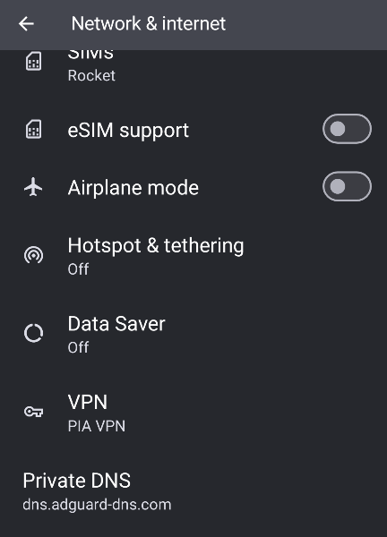
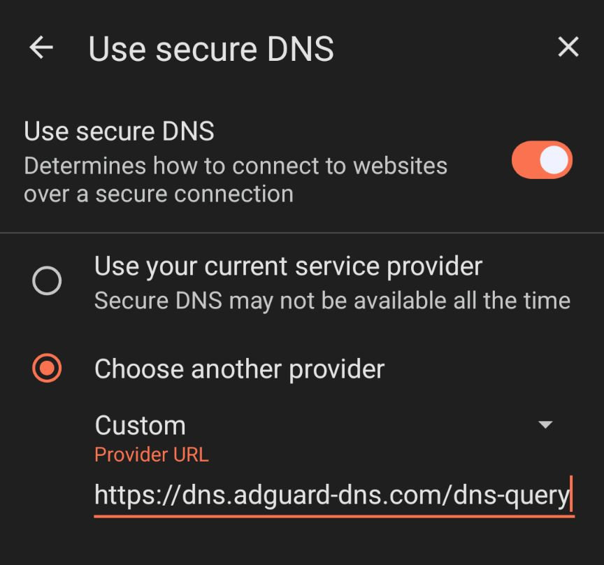

Private DNS Using Adguard
Explaining how to set up Private DNS on your devices.
Written By: Geovian
Updated: 10 December 2024
Background
Here's a quick explainer as to how we set up Private DNS for both your mobile device and your browser. Private DNS as an innovative piece of security technology is relatively new. It's been around in various guises since around 2016 or 2017 but nowadays has developed to be an important part of an internet users privacy and security toolkit.
In this regard, we're talking mainly about ads in the prevention of ads showing up in places like Facebook, YouTube, X and all the other social media haunts. Coupled with that, are invasive tracker codes that can follow you around the Internet like a homeless dog.
An example of a tracker code is one that's found on a YouTube url if you copy a video onto your phone or computer.
https://youtube.com/watch?v=3TpSoR189Wo&pp=ygUPVGVycmEgZGVsIGZ1ZWdv
If you didn't know any better you'd copy the whole URL onto one of your own web pages and be none the wiser for the code that you've just embedded with tracking on it. Just strip out anything after the &pp code.
Not only that, but corporate websites are also mining your user data through cleverly concealed ads that they put on their web pages through images, icons and hidden links. Filling out online forms is particularly dangerous, especially if financial information is required. Always err on the side of caution, because surreptitious harvesting is always happening.
To help mitigate some of these threats, some companies in the cyber security space have enabled technology to shut down ads and privacy threats without the need to add multiple extensions into your browser. Private DNS is one of these, and when combined with a reputable VPN, you have the makings of good operational security in place.
Private DNS -the Players
At this time, there are four major players in the Private DNS space:
- Cloudflare
- Quad 9
- Adguard
- OpenDNS
I have not used OpenDNS. I have used Cloudflare and Quad 9 but I found that they don't fully encrypt the connection on a consistent basis. I have frequented a number of sporting websites that have a lot of ads on them, so I can tell when Private DNS is working properly or not. The only one that consistently works time and again is Adguard. The ads disappear.
Remember though that websites are playing a game of whack-a-mole. So they will change their code or find ways to try and circumvent Private DNS. But from what I've seen so far and reading all of the literature from places like Reddit and other tech security type websites, is that many of these harvesters have been unsuccessful. So that's a good thing.
So, we'll focus on Adguard as this is definitely a good option for mobile users and computer users. For this article I'll focus only on the mobile platform.
Mobile Config
Before we get started, Adguard have put up a page which identifies all of the devices and platforms where Private DNS is supported.
There are instructions for the iPhone, but because I don't use Apple products I'll focus on Android for this particular article.
Steps

Enable Private DNS:\
-
Go to Settings > Network & Internet >
-
Advanced > Private DNS.
-
Toggle the switch to enable Private DNS. Choose AdGuard DNS:\
-
Select the “Private DNS provider hostname” option.
-
Enter dns.adguard.dns.com as the hostname.
-
Click Save to lock it in. Configure DNS-over-TLS:\ Since Android 13 only supports DNS-over-TLS (DoT), you won’t need to configure any additional settings. There is nothing more for you to do here.
Note 1 AdGuard Private DNS can work alongside a third party VPN or you can use Adguard's own VPN so that the two products can work alongside each other.
Note 2 Private DNS was introduced into the Android operating system via the Android 13 update. If you have an old phone you'll need to see if it's original manufacture and software install are either before or after Android 13. All modern phones going back at least 5 years should be compatible.
Private DNS with a Browser
Modern browsers can definitely support Private DNS but there is a caveat and users need to be aware of these.
The four major browsers used in the Android space are:
- Google Chrome
- Firefox
- Microsoft Edge
- Brave
For me personally, I have always avoided using Google Chrome and Microsoft Edge (previously Microsoft Internet Explorer) due to their business practices and known issues around ad saturation and cross product tracking within their respective ecosystems.
Instead I have preferred to use Brave, and at a pinch, particularly on my computer laptops: Firefox, though I mostly use Brave on Linux as well.
On mobile though, remember that the entirety of your device is covered by Adguard through the previous steps that we documented as above. Some might consider this a additional superfluous step but nonetheless you can do it. In the example, I'll use Brave Browser to demonstrate.
- on your Brave Browser, click the three dot menu, and go to the Settings option.
- Click on the option at the top of the list, Brave Shields and Privacy.
- Scroll down until you see the option Use secure DNS. Click it.
- Toggle this option on, to activate it.
- Choose Other Provider, and enter this URL:
<code>https://dns.adguard-dns.com/dns-query</code>
You don't need to save it, the setting is already saved once you've entered the URL. That's it.
In Summary
Occasionally, very occasionally, the Private DNS connection might go down for some reason. If it does, you can go back to your Internet Settings and just deactivate it, then bring it up for air later on.
If you want to test Private DNS, switch it off and then hover around some websites where you know where Ads are. Then go back and switch Private DNS back on and check the Ad behavior of those websites again.
Good luck.